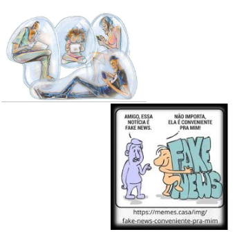

Formação em rede
Celulares nas escolas: normativas,
uso pedagógico e desafios
15/51
AS INFLUÊNCIAS QUE AS MÍDIAS EXERCEM

- Atualmente, as "bolhas de ódio", mídias distorcidas e Fake News (notícias falsas) exploram a fantasia, imaginação e curiosidade das crianças e adolescentes.
- As telas (mundo externo) preenchem diversos vácuos temporais ou existenciais, como: "não ter o que fazer", ócio, tédio, distração, falta de apego, abandono afetivo. E, ainda, familiares ocupados, estressados ou cansados demais para dar atenção aos filhos - ou porque eles próprios não desgrudam de seus celulares.
ABDO, 2024 EDUCATION PROFILES. ,2023; SBP, 2024; UNESCO, 2024; UNICEF, 2024; WHO, 2023.